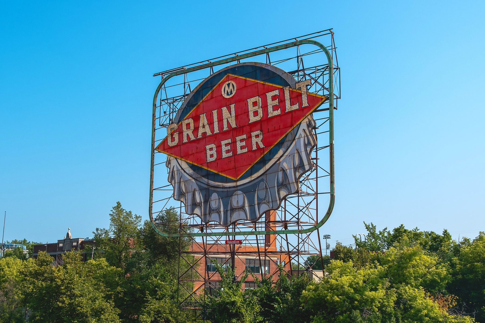
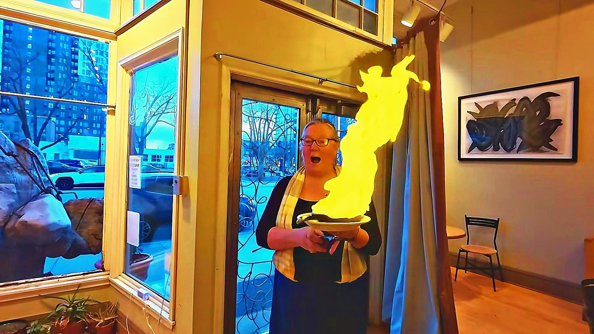

Elsie's
Dinner, cocktails and bowling
The neighborhood's own night out on Marshall. Burgers, a cocktail, a few frames, home in two minutes.
2 min walk · 1 min drive
St. Anthony West · Northeast Minneapolis
The oldest corner of Northeast, a few blocks of old homes between the Mississippi and East Hennepin. Boom Island at the end of the street, a little lighthouse in the river, and downtown right across the water.

Why people love it
I grew up in an old Minneapolis house, and this corner of Northeast feels like that to me: porches, old trees, houses that have been here over a hundred years. Then you walk west a few minutes and you're on the Mississippi, looking at the skyline.
That's the trick of St. Anthony West. It's quiet blocks, but East Hennepin's delis and dinner spots are a short walk one way and the riverfront parks are a short walk the other. Downtown is about 6 minutes by car.
Tap the map
Tap a pin to see the spot and roughly how long it takes to get there from the middle of the neighborhood, on foot and by car.
Times are approximate, routed from the middle of the neighborhood on foot and by car with OSRM routing, off peak. The shaded circles show roughly a 5 and 10 minute walk. Map data © OpenStreetMap contributors.
The riverfront
Boom Island Park is about 22 acres on the Mississippi with picnic areas and grills, a playground, walking and biking paths, restrooms and canoe and kayak racks. An old railroad bridge from 1901 carries you over to Nicollet Island on foot or by bike.
B.F. Nelson Park sits right next door, about 12 acres of open riverfront green. Put the two together and you've got a long loop of river trail a few minutes from the front door.
From Nicollet Island you can see the old Grain Belt Beer sign, a neighborhood landmark you'll start using as a compass.

History
Where to eat
Times are from the middle of the neighborhood, walking at an easy pace or driving off peak.
Dinner, cocktails and bowling
The neighborhood's own night out on Marshall. Burgers, a cocktail, a few frames, home in two minutes.
2 min walk · 1 min drive
Eastern European deli and sausage maker
Cabbage rolls, pierogi and house sausage. A Northeast institution.
15 min walk · 2 min drive
Liquor and cheese shop
The cheese counter and the wine wall on East Hennepin. Where dinner party plans get made.
16 min walk · 3 min drive

Greek, made by our friend Anna
Anna is a divine chef and a friend of ours for a long time. Go hungry.
19 min walk · 3 min drive
Nepali, Indian and Tibetan
Momos and curries in a warm little room.
17 min walk · 3 min drive
Neighborhood dinner spot
Small plates made for sharing on East Hennepin.
16 min walk · 2 min drive
Hot dogs and Chicago style
Snap, relish, done. The quick lunch on Broadway.
18 min walk · 3 min drive

Tortilleria and tasting counter
Fresh masa, fresh tortillas, and food that tastes like care.
11 min walk · 2 min drive

Hmong American comfort food
Brunch, noodles and a bakery case worth the trip.
13 min walk · 2 min drive
Schools
| School | Grades | From the neighborhood |
|---|---|---|
| Webster Elementary | Pre K to 5 | 13 min walk |
| Northeast Middle School | 6 to 8 | 10 min drive |
| Edison High School | 9 to 12 | 6 min drive |
Minneapolis Public Schools lists Webster, Northeast Middle and Edison as a community pathway. The district is reviewing school options for 2027 and 2028, so confirm any specific home with the district's school finder.
Walk a home here
Fifteen minutes through both units, the attic, the basement and the block. Tap to play.
Quick facts
Questions people ask
It's the riverfront corner of Northeast Minneapolis, between the Mississippi and the East Hennepin area, with Broadway along the north edge. Downtown is about a 6 minute drive.
It grew out of the old village of St. Anthony, named for St. Anthony Falls. Father Louis Hennepin saw the falls in 1680 and named them for his patron saint, St. Anthony of Padua. The village joined Minneapolis in 1872.
Boom Island Park, about 22 acres on the river with picnic areas, a playground, walking and biking paths and canoe and kayak racks, and B.F. Nelson Park right next to it, about 12 acres of open riverfront.
Log booms. Men working from the island sorted the branded logs floating down the Mississippi and steered each company's logs to its sawmill at the falls. Silt and sawdust eventually filled in the channel, so it stopped being an island decades ago.
Yes. An old 1901 railroad bridge was turned into a walking and biking bridge when Boom Island Park was built, and it was restored in 2018.
Elsie's is about a 2 minute walk from the middle of the neighborhood. Kramarczuk's, Surdyk's, All Saints and Gorkha Palace on East Hennepin are each about a 15 to 17 minute walk or a 3 minute drive.
Webster Elementary (Pre K to 5) is on 5th Street NE at the neighborhood's east edge, and Minneapolis Public Schools lists Northeast Middle and Edison High as its community pathway. The district is reviewing school options for 2027 and 2028, so always confirm a specific home with the district school finder.
Yes. I have a 1904 up and down duplex in the neighborhood. The walking tour is on this page. Text me at 952.258.3100 for the details.
More neighborhoods: MinneapolisWindom ParkWhittierSaint PaulBuying with GeoLocal Log
Whether it's the duplex in the tour or the right old house a few blocks from the river, text me. I'll send you what's out there, what's coming, and what I'd look at closely. I answer myself, night owls included. Just text Geo.
Text GeoPick what fits. Geoffrey answers himself.
Your information stays with Geoffrey. No spam, ever.
Geoffrey will reach out to you directly.
In the meantime: 952-258-3100.